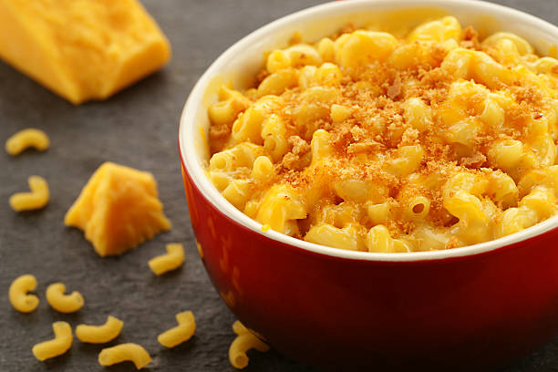

Homemade Mac & Cheese

Description
A nice and rich mac and cheese to enjoy. Prep and cook time is approximately 50 minutes. The ingredients below yields 4 servings.
Ingredients
- 8 ounces uncooked elbow macaroni
- 1/4 cup of butter
- 2 1/2 tablespoons of all-purpose flour
- 3 cups of milk
- 2 cups of shredded sharp Cheddar cheese
- 1/2 cup of grated Parmesan cheese
- 2 tablespoons of butter
- 1/2 cup of bread crumbs
- 1 pinch of paprika
Steps
- Preheat oven to 350 degrees F (175 degrees C).
- Cook the macaroni according to package or boil in water until soft
- Melt the 1/4 cup of butter in a medium skillet over low heat.
Gradually add flour, whisking until well combined.
Slowly pour in milk, whisking constantly until smooth.
Stir in cheeses and cook over low heat until cheese is
melted and the sauce is a little thick. Put macaroni
in large casserole dish and pour sauce over macaroni. Stir well.
- Melt 2 tablespoons of butter in a skillet over medium heat.
Add bread crumbs and brown. Spread over the macaroni and cheese to cover.
Sprinkle with a little paprika.
- Bake in the preheated oven for 30 minutes and serve when ready.